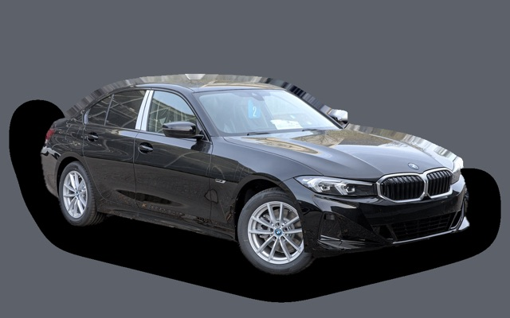

Vad kostar en Volvo S90 per månad?
En Volvo S90 från 2021 kostar cirka 4 411 kr i månaden, allt inräknat.
4 411 krper månad, årsmodell 2021
259 000 krpris, årsmodell 2021
490 000 krsenaste nypris
Bprisvärdhetsbetyg (2021)
Månadskostnad per årsmodell
| Årsmodell | Version i beräkningen | Pris | Per månad | Betyg |
|---|---|---|---|---|
| 2024 | B4 197 mildhybrid, Momentum / Core | 340 000 kr | 5 111 kr | B |
| 2021 | B4 197 mildhybrid, Momentum / Core | 259 000 kr | 4 411 kr | B |
| 2018 | D4 190, Momentum / Core | 205 000 kr | 4 180 kr | B |
Räknat på 5 års ägande och 1 250 mil per år, med bränslepriser från 2026-10-22. Månadskostnaden innehåller värdeminskning, drivmedel, service och reparationer, försäkring och fordonsskatt.
Så fördelas kostnaden för en 2021:a
- Värdeminskning: 1 613 kr/mån
- Drivmedel: 1 508 kr/mån
- Service och reparationer: 731 kr/mån
- Försäkring: 434 kr/mån
- Fordonsskatt: 124 kr/mån
Begagnatpriser i annonser
| Årsmodell | Medianpris | Annonser | Typiskt miltal |
|---|---|---|---|
| 2024 | 503 900 kr | 6 | 3 900 mil |
| 2023 | 412 400 kr | 8 | 6 000 mil |
| 2021 | 370 000 kr | 8 | 8 400 mil |
| 2020 | 274 800 kr | 9 | 11 300 mil |
| 2019 | 274 400 kr | 6 | 12 600 mil |
| 2018 | 205 000 kr | 31 | 15 600 mil |
| 2017 | 219 900 kr | 26 | 16 100 mil |
Medianpriset i svenska annonser per årsmodell i oktober 2026 (källa: Blocket, AutoUncle). Annonspriser är utgångspriser, och slutpriset kan bli lägre.
Motorer och versioner
| Motor | Drivmedel | Effekt | 0–100 km/h | Förbrukning (WLTP) | Räckvidd | Årsmodeller | Pristillägg |
|---|---|---|---|---|---|---|---|
| D4 190 | Diesel | 190 hk | 8,2 s | 4,9 l/100 km | – | 2016–2020 | +39 000 kr |
| T4 190 | Bensin | 190 hk | 8,3 s | 6,6 l/100 km | – | 2016–2020 | – |
| B4 197 mildhybrid | Bensin | 197 hk | 8,4 s | 7 l/100 km | – | 2021–2024 | – |
| T8 AWD laddhybrid 455 | Laddhybrid | 455 hk | 4,8 s | 1,4 l/100 km + 17 kWh/100 km | – | 2016–2024 | +229 000 kr |
- Utrustning: Momentum / Core, Inscription / Plus (+50 000 kr)
Fakta
- Kaross
- Sedan
- Årsmodeller
- 2016–2024
- Senaste nypris
- 490 000 kr
- Bagage
- 500 liter
- Euro NCAP
- 5 av 5 stjärnor
- Nybilsgaranti
- 3 år
- Driftsäkerhet
- 3,5 av 5
- Helförsäkring, uppskattning
- 7 600 kr/år
- Service, uppskattning
- 4 600 kr/år
Fördelar och nackdelar
Fördel
Stor, tyst och bekväm sedan med lyxig interiör.
Nackdel
Tillverkas inte längre för Sverige, och laddhybriden har dyra reparationer.
Liknande bilar
 Volvo S604 397 kr/mån som 2021:a
Volvo S604 397 kr/mån som 2021:a
BMW 3-serie4 611 kr/mån som 2023:a- Bild saknasMercedes-Benz CLA4 127 kr/mån som 2022:a
 Hyundai Ioniq 63 923 kr/mån som 2023:a
Hyundai Ioniq 63 923 kr/mån som 2023:a BYD Seal3 882 kr/mån som 2023:a
BYD Seal3 882 kr/mån som 2023:a Saab 9-5 Sedan3 833 kr/mån som 2006:a
Saab 9-5 Sedan3 833 kr/mån som 2006:a
Uppdaterad 2026-11-01 · annonsdata okt 2026